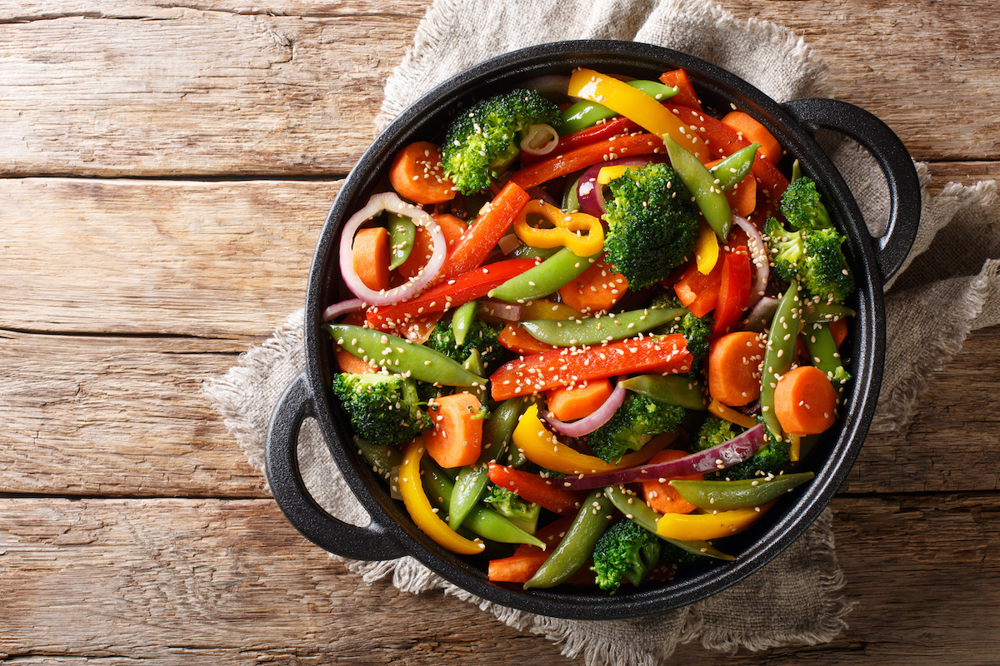

Classic Veggie Stir Fry

Description
A quick and colorful stir-fry packed with fresh vegetables, tossed in a savory soy-sesame sauce. Perfect for a healthy weeknight dinner!
Ingredients
- 1 cup broccoli florets
- 1 red bell pepper, sliced
- 1 carrot, julienned
- 1 cup snap peas
- 1 small zucchini, sliced
- 2 tbsp soy sauce
- 1 tbsp sesame oil
- 1 clove garlic, minced
- 1 tsp ginger, minced
- 1 tbsp olive oil
- Cooked rice (for serving)
Steps
- Heat olive oil in a large pan or wok over medium-high heat.
- Add garlic and ginger, sauté for 1 minute.
- Add broccoli, carrots, and bell pepper. Stir-fry for 3-4 minutes.
- Add zucchini and snap peas, cook for another 2-3 minutes.
- Pour in soy sauce and sesame oil, toss to coat.
- Serve over cooked rice.
Index